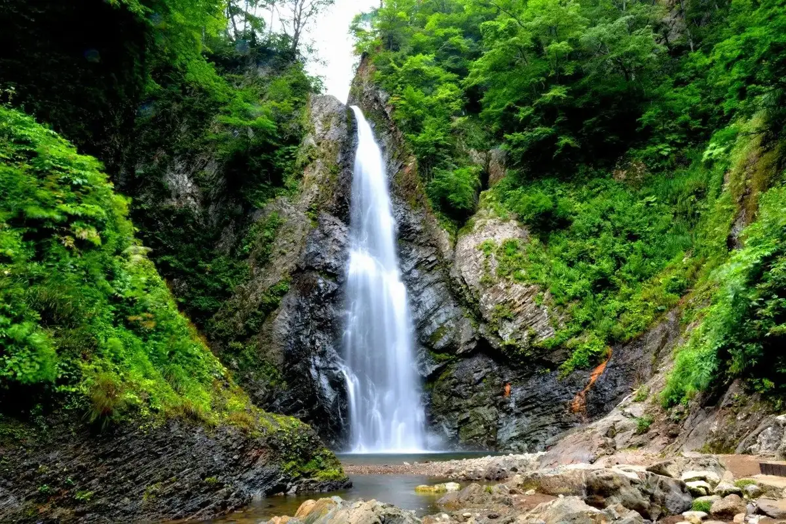
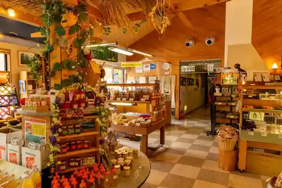
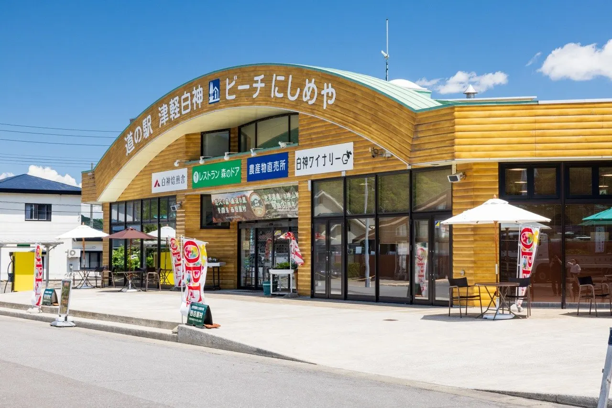

Japan / Aomori / Nishimeya
Nishimeya · Aomori
Nishimeya
Highlighted on the Aomori map.

Nishimeya Village Hall


Sights · Things to do · Places to eat · Places to stay · Day-to-day services
Nearby in Aomori: ← Nanbucho · Noheji →
Other towns: Ajigasawa · Aomori · Fujisaki · Fukaura · Gonohe · Goshogawara · Hachinohe · Hashikami · Higashidori · Hirakawa · Hiranai · Hirosaki · Imabetsu · Inakadate · Itayanagi · Kazamaura · Kuroishi · Misawa · Mutsu · Nakadomari · Nanbucho · Noheji · Oirase · Oma · Owani · Rokkasho · Rokunohe · Sai · Sannoe · Shichinohe · Shingo · Sotogahama · Takko · Tohokumachi · Towada · Tsugaru · Tsuruta · Yokohamacho · Yomogita
All towns in Aomori · Back to all prefectures